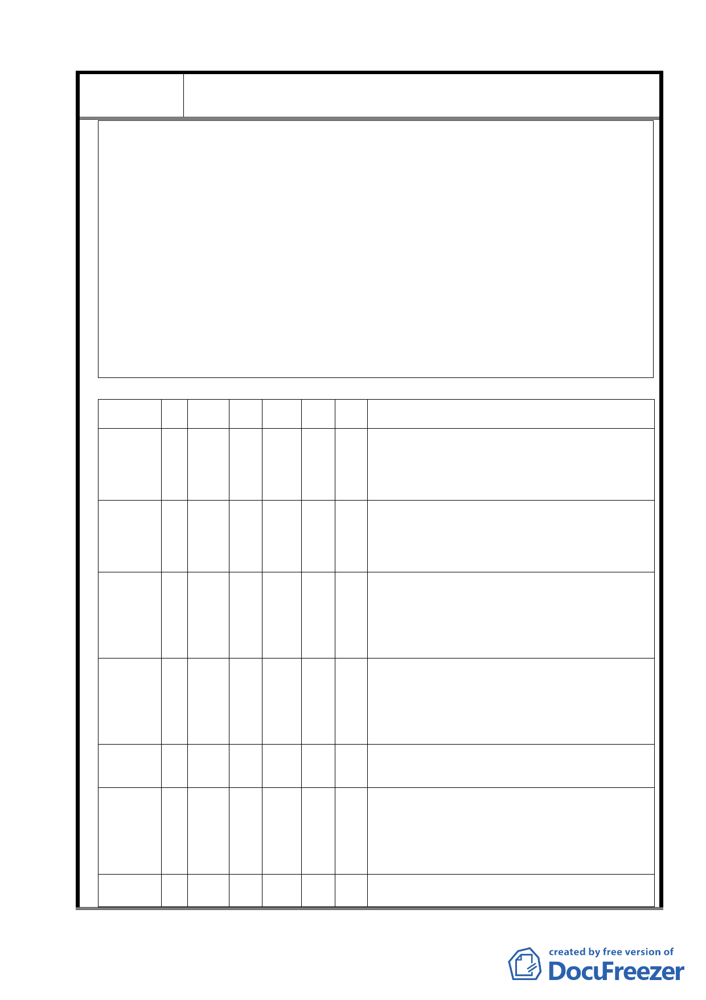

案名
變更臺北市士林區陽明山山仔后地區第二種住宅區為特定住宅區
細部計畫案
銀行所屬不動產應劃歸財政部國有財產局管理在案。
二、國產局 96 年 5 月 23 日 發人字號:台財產局接字第 0960014382 號函覆山仔后文史工作室妄稱：「 臺灣銀行屬公司
組織之國營事業，一國有財產法第 4 條第 2 項第 3 款規定，僅其股份屬國有財產，該行所有之不動產等資產，非
屬國有，無從將其不動產劃歸國産交本局管理，請 查照。」
三、依上開意旨，竟曲解台銀不動產不得為國產局管理。查國有財產法第四條係劃分國有財產區分為「公用財產」與
「非公用財產」；「公用財產」包括第四條第三款所指之「事業用財產：國營事業（台銀即屬之）使用之財產均屬
之。但國營事業為公司組織者，僅其股份而言」。「非公用財產」，係指公用財產以外可供收益或處分之一切國有財
產。同法第十二條明示：「非公用財產以財政部國有財產局為管理機關，直接管理之」。是以無論公用財產（公務
用財產、公共用財產、事業用財產），或非共用財產，皆屬國產。
四、依國有財產法之條文，且台銀百分之百為財政部所有，台銀所屬土地自屬國有財產無誤。而國產局曲解其主管之
國有財產法，意圖將台銀所屬土地劃為台銀「私有」，如此怠忽職守，匪夷所思。據報載台銀可能將於今年七月一
日與中央信託局、土地銀行等合併（附件一），台銀所屬不動產仍為「國有財產」，依法應歸國產局管理。
五、本函以存證信函送達國產局，敦請國產局於文到七日內，重新依國有財產法，回覆山仔后工作室，否則本工作室
及相關機構，將以偽造公文書罪、貪瀆罪告發國產局。
正本：財政部國有財產局
副本：財政部、財政部政風室、法務部、法務部調查局、立法委員丁守中辦公室、立法委員田秋堇辦公室、立法委員
費鴻泰辦公室、立法委員江昭儀辦公室、立法委員林炳坤辦公室、立法委員潘維剛辦公室、立法委員蔡正元辦
公室、立法委員鄭運鵬辦公室、台灣銀行。
附件 4
地段 (小段)
地號 舊地段 舊地號
路段
美軍宿
產權人
產權移轉過程
舍分區
士林區華崗段 3
685
小段
草山段山
203
子後小段
建業路中
經建會 H-2
庸路附近
46 年陽明山管理局徵收私人(張 古 錐)土地，但 登 記 為 47 年‘移 轉 ’陽
明 山 管 理 局 ﹐所 有 權 人 ﹕陽 管 局 ﹔管理機關﹕陽明山自來水廠興
建委員會。63 年 管 理 機 關 變 更 ﹐ 所有權人﹕ 台 北 市 ，管理機關﹕
台 北 自 來 水 廠﹐66 年 變 更 為 台 北 自 來 水 事 業 處，94 年 變 更
為台北市立聯合醫院
士林區華崗段 3
688
小段
草山段山
建業路中
202 之 1
經建會 H-2
子後小段
庸路附近
士林區華崗段 3
693
小段
草山段山
建業路中
202 之 8
經建會 H-2
子後小段
庸路附近
46 年陽明山管理局徵收私人(張 古 錐)土地，但 登 記 為 47 年‘移 轉 ’陽
明 山 管 理 局 ﹐所 有 權 人 ﹕陽 管 局 ﹔管理機關﹕陽明山自來水廠興
建委員會。63 年 管 理 機 關 變 更 ﹐ 所有權人﹕ 台 北 市 ，管理機關﹕
台 北 自 來 水 廠﹐66 年 變 更 為 台 北 自 來 水 事 業 處，94 年 變 更
為台北市立聯合醫院
54 年 分 割 地 號 202-1﹐所 有 權 人 ﹕陽 明 山 管 理 局 ﹐管 理 機
關 ﹕陽 明 山 自 來 水 廠 興 建 委 員 會 ﹔54 年底所有 權 人‘變 更’
為 陽 明 山 管 理 局 陽 明 山 自 來 水 廠 ﹔55 年 轉‘賣’﹐所 有 權
人 ﹕中 華 民 國 ﹐管 理 者 ﹕ 行 政 院 國 際 經 濟 合 作 發 展 委 員
會 ﹐62 年 改 為 行 政 院 經 濟 設 計 委 員 會 ﹐66 年 改 為 行 政 院 經
濟建設委員會
士林區華崗段 3
694
小段
草山段山
建業路中
202 之 2
經建會 H-2
子後小段
庸路附近
40 年 所 有 權 人 ﹕中 華 民 國 ﹐管 理 機 關 ﹕台 灣 省 公 產 管 理
處﹐41 年 改 為 台 灣 省 政 府 財 政 廳 ﹔48 年 徵 收﹐所有 權 人﹕陽 明
山 管 理 局﹐管 理 機 關 ﹕陽 明 山 自 來 水 廠 ﹔55 年‘移轉’﹐所 有
權 人﹕中 華 民 國﹐管 理 者﹕行 政 院 國 際 經 濟 合 作 發 展 委 員
會﹐62 年 改為 行 政 院 經 濟 設 計 委 員 會﹐66 年 改 為 行 政 院 經 濟
建設委員會
士林區華崗段 3
697
小段
草山段山
205
子後小段
建業路中
經建會 H-2
庸路附近
46 年陽明山管理局徵收私人土地，管理機關為陽明山自來水廠興建委員會。55
年買賣移轉，所有權人中華民國，管理機關為行政院國際經濟合作發展委員會，
66 年管理機關變更為行政院經濟建設委員會。
士林區華崗段 3
711
小段
草山段山
建業路中
205 之 5
經建會 H-2
子後小段
庸路附近
50 年 分 割 地 號 205﹐所 有 權 人﹕陽 明 山 管 理 局﹐管 理 機 關 ﹕
陽 明 山 自 來 水 廠 興 建 委 員 會 ﹔55 年 所 有 權 人‘更正 ’為
陽 明 山 管 理 局 陽 明 山 自 來 水 廠 ﹔55 年 轉‘賣’﹐所 有 權
人 ﹕中 華 民 國 ﹐管 理 者 ﹕行 政 院 國 際 經 濟 合 作 發 展 委 員
會﹐62 年 改 為 行 政 院 經 濟 設 計 委 員 會﹐66 年 改 為 行 政 院 經
濟建設委員會
士林區華崗段 3
712
小段
草山段山
212
子後小段
建業路中
經建會 H-2
庸路附近
萬寶開發股份有限公司
29